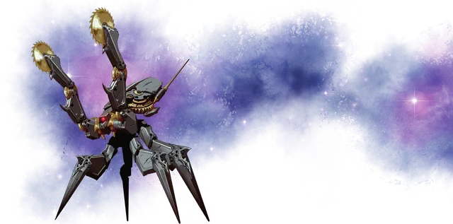

Механический ужас
Clockwork Horror
Маленький Конструкт, законно-злой

Класс Доспеха 18 (природный доспех)
Хиты 60 (8к6 + 32)
Скорость 30 футов, лазая 30 футов
| мод | спас | ||
|---|---|---|---|
| СИЛ | 14 | +2 | +4 |
| ЛОВ | 14 | +2 | +2 |
| ТЕЛ | 18 | +4 | +4 |
| мод | спас | ||
|---|---|---|---|
| ИНТ | 13 | +1 | +1 |
| МДР | 14 | +2 | +4 |
| ХАР | 10 | +0 | +0 |
Навыки Восприятие +6
Иммунитет к урону электричество, яд
Иммунитет к состояниям глухота, испуг, истощение, окаменение, ослепление, отравление, очарование, паралич
Чувства тёмное зрение 120 футов, пассивное Восприятие 16
Языки Зиксвет, Три-кринский
Опасность 2 (450 опыта)
Бонус мастерства +2
Особенности
Отключение. Если ужас становится целью заклинания рассеивание магии [dispel magic], он должен преуспеть в спасброске Телосложения против Сл спасброска от заклинаний, иначе отключится на 1 минуту или до тех пор, пока не получит какой-либо урон.
Необычная природа. Ужас не нуждается в воздухе, питье, еде и сне.
Действия
Мультиатака. Ужас совершает одну атаку Укусом и две атаки Циркулярными пилами или совершает две атаки Электрическим разрядом.
Укус. . Рукопашная атака оружием: +4 к попаданию, досягаемость 5 фт., одна цель. Попадание: 6 (1к8 + 2) колющего урона.
Циркулярная пила. . Рукопашная атака оружием: +4 к попаданию, досягаемость 5 фт., одна цель. Попадание: 4 (1к4 + 2) рубящего урона.
Электрический разряд. . Дальнобойная атака заклинанием: +4 к попаданию, дистанция 120 фт., одна цель. Попадание: 7 (1к10 + 2) урона электричеством.
Подключение к магическому рулю. Ужас подключается к магическому рулю корабля, который может видеть пределах 5 футов, и мгновенно настраивается на него. Если другое существо уже настроено на руль, то его настройка прекращается в момент настройки ужаса. Ужасу не нужно быть заклинателем, чтобы использовать руль. Бонусным действием ужас может отсоединиться от руля и прекратить настройку на него.
Описание
Механический ужас — беспощадный насекомоподобный автоматрон, дьявольская машина, заключённая в броню из адамантина или другого благородного металла. Они бороздят Дикий космос на захваченных магических кораблях, собирая ценные металлы и кристаллы для создания новых механических ужасов. У механических ужасов нет иной цели, кроме воспроизводства себе подобных. Они ни перед чем не остановятся ради этого. Время необходимое для сборки нового автоматрона с учётом наличия требуемых материалов занимает приблизительно десять дней.
Диаметр тела ужаса составляет 2 фута, а вместе с ножками — 4 фута. Механический ужас видит с помощью встроенного в переднюю часть головы кристалла.
Ужасы общаются друг с другом посредством щелчков, жужжания и других схожих звуков, великолепно имитируя речь три-кринов. Из-за этого ходят слухи, что первое подобное существо было детищем три-крина изобретателя. Также с помощью кристалла ужас может испускать вспышки света, посылая сообщения кодом «точка-тире» другим существам, способным видеть этот свет. Помимо механических ужасов код, названный Зиксвет, могут изучить другие существа.
Если другое существо встанет на его пути, ужас атакует острыми как бритва жвалами и двумя крошечными циркулярными пилами, закреплёнными на концах его передних конечностей. Ужас может создать разряд электричества с помощью вмонтированного в его тело электрода.
Когда ужас умирает, создавшая его магия поглощает существо за 1 минуту. Его металлическое тело и кристалл быстро растворяются, оставив после себя лишь маленькую кучку блестящей пыли.